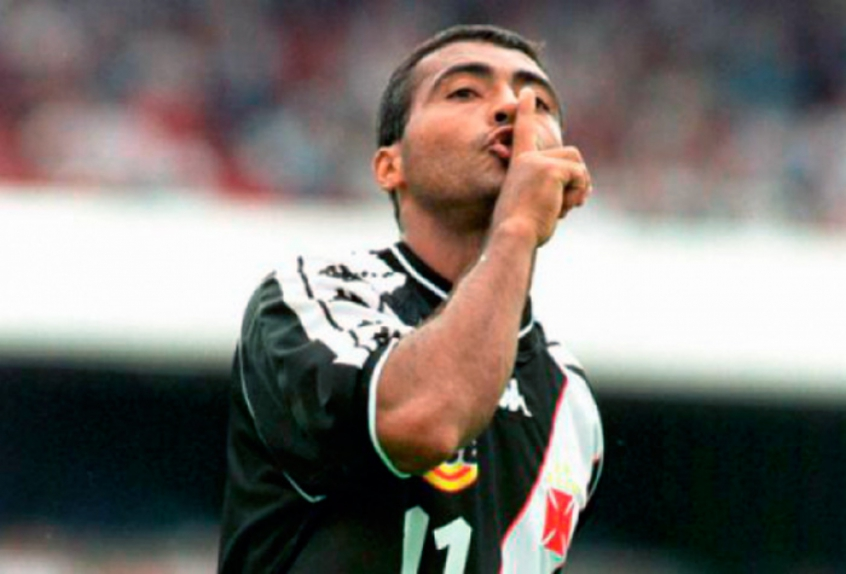
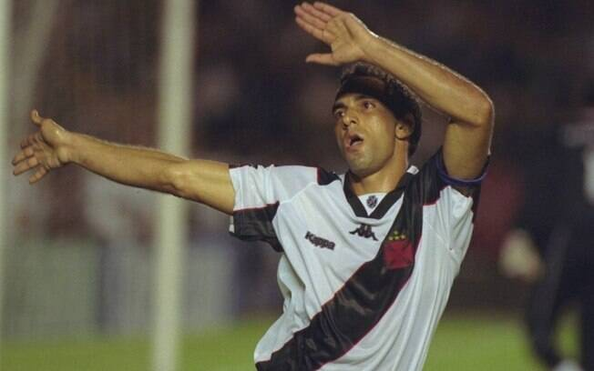
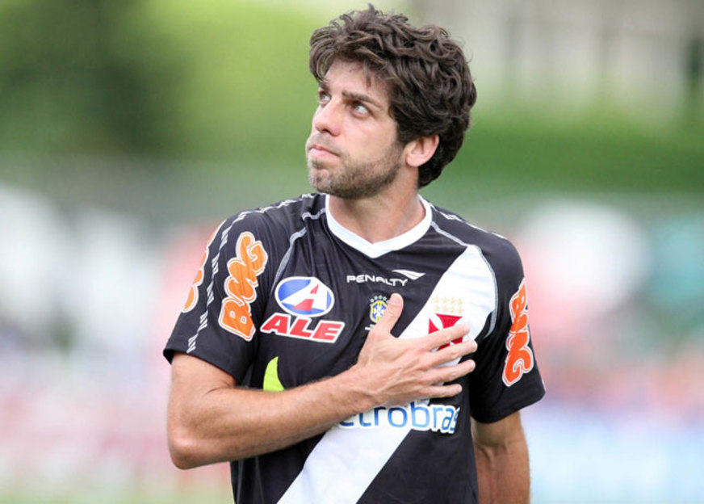
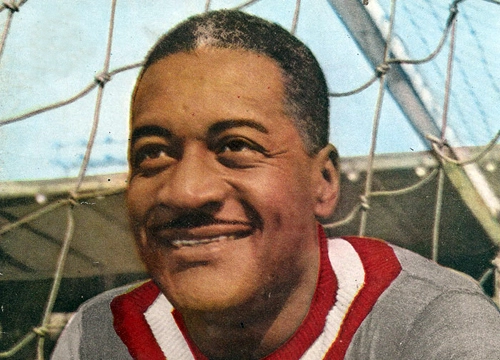
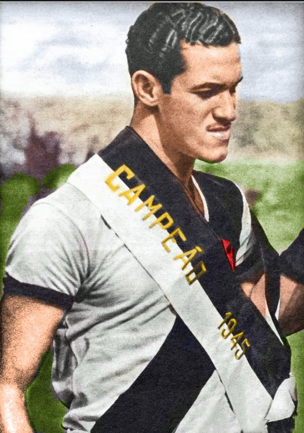
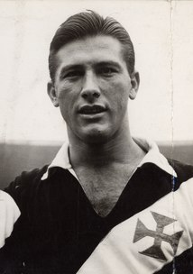
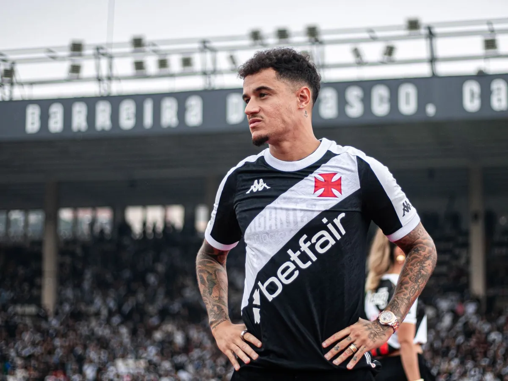

Clube de Regatas Vasco da Gama

ROBERTO DINAMITE

Sua trajetória no clube carioca é uma das mais extensas e brilhantes do futebol brasileiro. Pelos números, Roberto Dinamite é inatingível: mais de mil jogos com a camisa cruz-maltina e mais de setecentos gols no clube, marcas que dificilmente serão superadas. Ele se tornou o maior artilheiro da história do Vasco, do Campeonato Carioca e do Campeonato Brasileiro. Marcava de todos os jeitos – de cabeça, de fora da área, de falta, de pênalti –, mas, acima de tudo, marcava nos momentos decisivos. Foi campeão brasileiro em 1974, liderando o time em uma das campanhas mais emocionantes da história vascaína, e empilhou títulos cariocas ao longo de quase três décadas de carreira.
Romário
Romário teve diversas passagens marcantes pelo Vasco da Gama, clube que o revelou e no qual viveu alguns dos momentos mais brilhantes de sua carreira; estreou no profissional ainda jovem, no início dos anos 80, já demonstrando o faro de gol que o tornaria mundialmente famoso, voltou ao clube após o período europeu para ser artilheiro em praticamente todas as competições que disputou, liderou o time em campanhas históricas como quando protagonizou jogos decisivos, como a inesquecível virada sobre o Palmeiras — e manteve, mesmo veterano, uma produtividade absurda, marcando gols com a mesma naturalidade de sempre; ao longo de suas etapas em São Januário, Romário acumulou títulos, recordes, idolatria e uma ligação afetiva com a torcida que perdurou até seus últimos dias como jogador, deixando um legado que o consagra como um dos maiores ídolos da história do Vasco.
Edimundo
Edmundo é um dos ídolos mais intensos e controversos da história do Vasco da Gama, um jogador que parecia viver o futebol com uma paixão visceral e uma sede de vitórias que se refletia em cada lance; apelidado de “Animal” pela sua força, agressividade e instinto competitivo, estreou no Vasco no final dos anos 80 e rapidamente se destacou pelo talento técnico, velocidade e faro de gol, tornando-se um atacante decisivo e imprevisível, capaz de desequilibrar qualquer partida com dribles desconcertantes e finalizações precisas, mas também conhecido por seu temperamento explosivo dentro e fora de campo, o que frequentemente gerava polêmicas; ao longo de suas passagens pelo clube, conquistou títulos importantes, como Campeonatos Cariocas e Brasileiros, e viveu momentos históricos, como a final do Campeonato Brasileiro de 1997, quando se destacou como protagonista, e sua volta nos anos 2000, quando ainda manteve a capacidade de decidir jogos e inspirar a torcida; Edmundo deixou uma marca indelével em São Januário, sendo lembrado não apenas pelos gols e títulos, mas pela entrega extrema, pela paixão intensa em campo e pela personalidade singular que fez dele um ídolo eterno do Vasco.
Juninho Pernambucano
Juninho Pernambucano é um dos maiores ídolos da história do Vasco da Gama, um jogador que combinava talento, inteligência e precisão de forma quase sobrenatural, capaz de decidir partidas inteiras com sua visão de jogo e, sobretudo, com suas cobranças de falta lendárias. Nascido em Recife, começou sua carreira no Sport, mas foi em São Januário que ele realmente se transformou em protagonista, conquistando a titularidade no meio-campo vascaíno e logo se tornando a referência técnica do time, com passes cirúrgicos, lançamentos perfeitos e a habilidade de marcar gols nos momentos mais decisivos. Juninho foi peça-chave em campanhas históricas, incluindo a emocionante campanha da Libertadores de 1998, quando seus gols de falta e sua leitura de jogo ajudaram o Vasco a chegar à final, eternizando-se na memória da torcida. Mesmo quando se transferiu para a Europa, o vínculo com o clube jamais se quebrou, e suas voltas ao time sempre foram recebidas como o retorno de um verdadeiro rei da Colina. Ao longo de suas passagens, conquistou títulos nacionais e estaduais, inspirou gerações e deixou um legado que combina técnica, classe e liderança, tornando-se um símbolo de excelência e inteligência dentro de campo, capaz de transformar o futebol em espetáculo sempre que tocava na bola.
Moacyr Barbosa
Moacyr Barbosa teve uma passagem marcante pelo Vasco da Gama e foi ali que continuou a demonstrar sua grandeza como goleiro em um clube que também tinha tradição e exigência; chegou ao Vasco no início dos anos 50, logo após o Maracanazo, trazendo consigo experiência e personalidade, e rapidamente se tornou um dos pilares da defesa cruz-maltina, mostrando segurança, reflexos rápidos e presença de área que inspiravam confiança na equipe; ajudou o clube a disputar títulos estaduais e nacionais, defendendo a meta em momentos decisivos, e sua liderança dentro de campo, mesmo carregando o peso da injustiça sofrida na seleção, fez dele uma figura respeitada entre jogadores e torcedores; no Vasco, Barbosa não apenas mantinha a qualidade técnica que o consagrara, mas também transmitia força e dignidade, tornando-se um exemplo de profissionalismo e resistência, e consolidando seu legado como um dos grandes goleiros da história do futebol brasileiro, capaz de superar críticas e adversidades para continuar brilhando em São Januário.
Menções Honrosas
⬐Ademir Menezes⬎
⬐Bellini⬎
⬐Coutinho⬎
